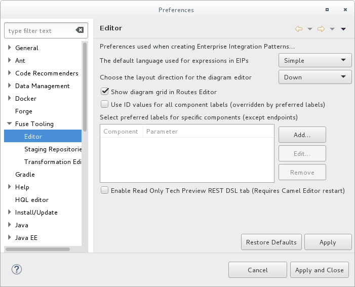
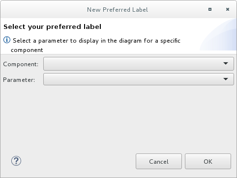
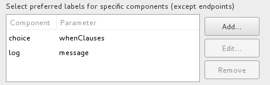

Using Fuse preference settings, you can specify options for the route editor’s behavior and user interface:
- The default language to use for expressions in Enterprise Integration Patterns (EIPs)
- The direction (to the right or down) in which patterns flow on the Design canvas when you create routes
- Whether the Design canvas displays a grid overlay in the background of the canvas.
- The method for labeling nodes on the Design canvas
To configure the route editor:
Open the Editor preferences window:
- On Linux and Windows machines, select Windows → Preferences → Fuse Tooling → Editor.
On OS X, select Developer Studio → Preferences → Fuse Tooling → Editor.

- To select the default language that you want to use for expressions in Enterprise Integration Pattern (EIP) components, select a language from the drop-down list. The default is Simple.
- To specify the direction in which you want the route editor to align the patterns in a route, select Down or Right. The default is Down.
- To enable or disable displaying a grid overlay on the background of the canvas, check the box next to Show diagram grid in Routes Editor. The default is enabled.
To enable or disable using component IDs as labels in the route editor’s Design tab, check the box next to Use ID values for component labels. The default is disabled.
If you check this option and also specify a preferred label for a component (see Step 6), then the preferred label is used for that component instead of the ID value.
To use a parameter as the label for a component (except for endpoints, such as File nodes) in the route editor’s Design tab:
In the Preferred labels section, click Add. The New Preferred Label dialog opens.

- Select a Component and then select the Parameter to use as the label for the component.
Click OK. The component and parameter pairs are listed in the Editor Preferences window.

You can optionally Edit and Remove component labels.
![[Note]](imagesdb/note.png)
Note If you check the Use ID values for component labels option, it applies to all components except for the components listed in the Preferred labels section.
- Click Apply and Close to apply the changes to the Editor preferences and close the Preferences window.
| Note |
|---|---|
You can restore the route editor’s original defaults at any time by returning to the Editor preferences dialog and clicking Restore Defaults. |